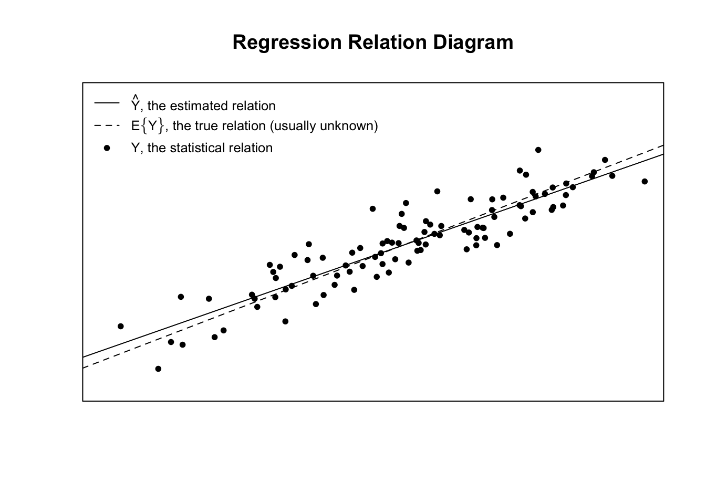
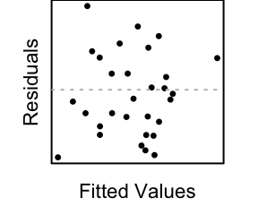
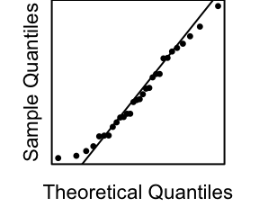
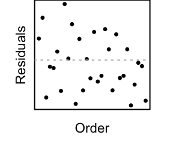
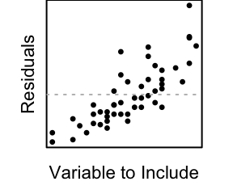

Linear Regression
Determine which explanatory variables have a significant effect on the mean of the quantitative response variable.
Simple Linear Regression

Simple linear regression is a good analysis technique when the data consists of a single quantitative response variable \(Y\) and a single quantitative explanatory variable \(X\).
Overview
The mathematical model of simple linear regression is \[ Y_i = \underbrace{\overbrace{\beta_0}^{\text{intercept}} + \overbrace{\beta_1}^{\text{slope}} X_i \ }_{\text{regression relation}} + \epsilon_i \] where \(\epsilon_{i} \sim N(0,\sigma^2)\) is the error term.
This model is appropriate when five assumptions can be made.
Linear Relation: the regression relation between \(Y\) and \(X\) is linear.
Normal Errors: the error terms are normally distributed with a mean of zero.
Constant Variance: the variance of the error terms is constant over all \(X\) values.
Fixed X: the \(X\) values can be considered fixed and measured without error.
Independent Errors: the error terms are independent.
Note: see the Explanation tab for details about checking the regression assumptions.
Hypotheses
\[ \left.\begin{array}{ll} H_0: \beta_1 = 0 \\ H_a: \beta_1 \neq 0 \end{array} \right\} \ \text{Slope Hypotheses}^{\quad \text{(most common)}}\quad\quad \]
\[ \left.\begin{array}{ll} H_0: \beta_0 = 0 \\ H_a: \beta_0 \neq 0 \end{array} \right\} \ \text{Intercept Hypotheses}^{\quad\text{(sometimes useful)}} \]
If \(\beta_1 = 0\), then the model reduces to \(Y_i = \beta_0 + \epsilon_i\), claiming \(X\) does not improve our understanding of the mean of \(Y\) if the null hypothesis is true.
If \(\beta_0 = 0\), then the model reduces to \(Y_i = \beta_1 X + \epsilon_i\), claiming the average \(Y\)-value is \(0\) when \(X=0\).
R Instructions
Console Help Command: ?lm()
mylm <- lm(y ~ x, data=YourDataSet) Perform the Regression
summary(mylm) View the Hypothesis Test Results
plot(mylm, which=1:2) Check Assumptions 1, 2, and 3
mylmis some name you come up with to store the results of thelm()test. Note thatlm()stands for “linear model.”ymust be a “numeric” vector of the quantitative response variable.xis the explanatory variable. It can either be quantitative (most usual) or qualitative.YourDataSetis the name of your data set.
To add the regression line to a scatterplot, first make the scatterplot, then use the command
abline(mylm)
Finally, note that the mylm object contains the names(mylm) of
mylm$coefficientsContains two values. The first is the estimated \(y\)-intercept. The second is the estimated slope.mylm$residualsContains the residuals from the regression in the same order as the actual dataset.mylm$fitted.valuesThe values of \(\hat{Y}\) in the same order as the original dataset.mylm$...several other things that will not be explained here.
Explanation
The True (unknown) Model for \(Y_i\)
The mathematical model of simple linear regression is \[ Y_i = \underbrace{\beta_0 + \beta_1 X_i}_{\text{regression relation}} + \underbrace{\epsilon_i}_{\substack{\text{statistical} \\ \text{relation}}} \] where \(\epsilon_{i} \sim N(0,\sigma^2)\) is the error term.
The model has two elements to it, a regression relation \(E\{Y\} = \beta_0 + \beta_1 X\) and a statistical (i.e., a random) relation \(\epsilon\).
The regression relation \(E\{Y\} = \beta_0 + \beta_1 X\) creates the line of regression where \(\beta_0\) is the \(y\)-intercept of the line and \(\beta_1\) is the slope of the line. The regression relationship provides the average \(Y\)-value for a given \(X\)-value.
The statistical relation, the \(\epsilon_i\), allows the individual points to deviate from the line.
Typically, the term “expected value” is used instead of the term “average” as another way of saying the mean, or average value. The notation for the expected value is \(E\{Y\}\). Thus, \[ E\{Y\} = \underbrace{\beta_0 + \beta_1 X}_{\text{regression relation}} \]
The Estimated Model \(\hat{Y}_i\)
An estimate of the unkown regression relation can be obtained from a sample of data. The estimate of the regression relation is given by \(\hat{Y}_i\), pronounced “\(Y\) hat sub \(i\),” which is defined by the equation \[ \hat{Y}_i = b_0 + b_1 X_i \] Here \(b_0\) is the estimate of the true \(y\)-intercept \(\beta_0\), and \(b_1\) is the estimate of the true slope \(\beta_1\). Note that the \(b\)’s are sample statistics like \(\bar{x}\) and the \(\beta\)’s are population parameters like \(\mu\). The \(b\)’s estimate the \(\beta\)’s.
The formula for the estimate of the regression line (the regression relation) is \[ \hat{Y}_i = \underbrace{b_0 + b_1 X_i}_{\text{estimated relation}} \] Thus, \(\hat{Y}\) is the estimator of \(E\{Y\}\). So \(\hat{Y}\) is interpreted as the estimated average \(Y\)-value for any given \(X\)-value.
Putting it all Together
This graphic depicts the true, but typically unknown, regression relation (dotted line). It also shows how a sample of data from the true regression relation (points) can be used to obtain an estimated regression equation (solid line) that is fairly close to the truth (dotted line).

Assumptions
There are five assumptions that should be met for the mathematical model of simple linear regression to be appropriate.
- The regression relation between \(Y\) and \(X\) is linear.
- The error terms are normally distributed with \(E\{\epsilon_i\}=0\).
- The variance of the error terms is constant over all \(X\) values.
- The \(X\) values can be considered fixed and measured without error.
- The error terms are independent.
Checking the Assumptions
Residuals are used to diagnose departures from the regression assumptions. Residuals are the difference between the observed value of \(Y\) (the points) and the predicted, or estimated value, \(\hat{Y}\). Denoting a residual by \(r_i\), \[ r_i = Y_i - \hat{Y}_i \] The residual \(r_i\) estimates the true error \(\epsilon_i\).
Residuals versus Fitted-values Plot: Checks Assumptions 1 and 3
|  |
The linear relationship and constant variances assumptions can be diagnosed using a residuals versus fitted-values plot. The fitted values are the \(\hat{Y}_i\). The residuals versus fitted-values plot compares the residual to the magnitude of the fitted-value. | Explanation | |
Q-Q Plot of the Residuals: Checks Assumption 2
|  |
The normality of the error terms can be assessed by considering a normal probability plot (Q-Q Plot) of the residuals. If the residuals appear to be normal, then the error terms are also considered to be normal. If the residuals do not appear to be normal, then the error terms are also assumed to violate the normality assumption. | Explanation | |
Residuals versus Order Plot: Checks Assumption 5
|  |
When the data is collected in a specific order, or has some other important ordering to it, then the independence of the error terms can be assessed. This is typically done by plotting the residuals against their order of occurrance. If any dramatic trends are visible in the plot, then the independence assumption is violated. | Explanation | |
Interpreting the Model Parameters
The interpretation of \(\beta_0\) is only meaningful if \(X=0\) is in the scope of the model. If \(X=0\) is in the scope of the model, then the intercept is interpreted as the \(E\{Y\}\) when \(X=0\). The interpretation of \(\beta_1\) is the amount of increase (or decrease) in the \(E\{Y\}\) per unit change in \(X\).
Inference for the Model Parameters
Most inference in regression is focused on the slope, \(\beta_1\). Recall that the interpretation of \(\beta_1\) is the amount of increase (or decrease) in the expected value of \(Y\) per unit change in \(X\). There are three main scenarios where inference about the slope is of interest.
Determine if there is evidence of a meaningful linear relationship in the data. If \(\beta_1 = 0\), then there is no relation between \(X\) and \(E\{Y\}\). Hence we might be interested in testing the hypotheses \[ H_0: \beta_1 = 0 \] \[ H_a: \beta_1 \neq 0 \]
Determine if the slope is greater, less than, or different from some other hypothesized value. In this case, we would be interested in using hypotheses of the form \[ H_0: \beta_1 = \beta_{10} \] \[ H_a: \beta_1 \neq \beta_{10} \] where \(\beta_{10}\) is some hypothesized number.
To provide a confidence interval for the true value of \(\beta_1\).
t Tests
Before we discuss how to test the hypotheses listed above or construct a confidence interval, we must understand the distribution of the estimate \(b_1\) of the parameter \(\beta_1\). Since \(b_1\) is an estimate, it will vary from sample to sample, even though the truth, \(\beta_1\), remains fixed. It turns out that the sampling distribution of \(b_1\) (where the \(X\) values remain fixed from study to study) is normal with mean and variance: \[ \mu_{b_1} = \beta_1 \] \[ \sigma^2_{b_1} = \frac{\sigma^2}{\sum(X_i-\bar{X})^2} \] Hence, an immediate choice of statistical test to test the hypotheses \[ H_0: \beta_1 = \beta_{10} \] \[ H_a: \beta_1 \neq \beta_{10} \] where \(\beta_{10}\) can be zero, or any other value, is a t test given by \[ t = \frac{b_1 - \beta_{10}}{\sigma_{b_1}} \] where \(\sigma^2_{b_1} = \frac{MSE}{\sum(X_i-\bar{X})^2}\). With quite a bit of work it has been shown that \(t\) is distributed as a \(t\) distribution with \(n-2\) degrees of freedom. The nearly identical test statistic for testing \[ H_0: \beta_0 = \beta_{00} \] \[ H_a: \beta_0 \neq \beta_{00} \] is given by \[ t = \frac{b_0 - \beta_{00}}{\sigma_{b_0}} \] where \(\sigma^2_{b_0} = MSE\left[\frac{1}{n}+\frac{\bar{X}^2}{\sum(X_i-\bar{X})^2}\right]\). This version of \(t\) has also been shown to be distributed as a \(t\) distribution with \(n-2\) degrees of freedom.
Creating a confidence interval for either \(\beta_1\) or \(\beta_0\) follows immediately from these results using the formulas \[ b_1 \pm t^*_{n-2}\cdot \sigma_{b_1} \] \[ b_0 \pm t^*_{n-2}\cdot \sigma{b_0} \] where \(t^*_{n-2}\) is the critical value from a t distribution with \(n-2\) degrees of freedom corresponding to the chosen confidence level.
F tests
Another way to test the hypotheses \[ H_0: \beta_1 = \beta_{10} \quad\quad \text{or} \quad\quad H_0: \beta_0 = \beta_{00} \] \[ H_a: \beta_1 \neq \beta_{10} \quad\quad \ \ \quad \quad H_a: \beta_0 \neq \beta_{00} \] is with an \(F\) Test. One downside of the F test is that we cannot construct confidence intervals. Another is that we can only perform two-sided tests, we cannot use one-sided alternatives with an F test. The upside is that an \(F\) test is very general and can be used in many places that a t test cannot.
In its most general form, the \(F\) test partitions the sums of squared errors into different pieces and compares the pieces to see what is accounting for the most variation in the data. To test the hypothesis that \(H_0:\beta_1=0\) against the alternative that \(H_a: \beta_1\neq 0\), we are essentially comparing two models against each other. If \(\beta_1=0\), then the corresponding model would be \(E\{Y_i\} = \beta_0\). If \(\beta_1\neq0\), then the model remains \(E\{Y_i\}=\beta_0+\beta_1X_i\). We call the model corresponding to the null hypothesis the reduced model because it will always have fewer parameters than the model corresponding to the alternative hypothesis (which we call the full model). This is the first requirement of the \(F\) Test, that the null model (reduced model) have fewer “free” parameters than the alternative model (full model). To demonstrate what we mean by “free” parameters, consider the following example.
Say we wanted to test the hypothesis that \(H_0:\beta_1 = 2.5\) against the alternative that \(\beta_1\neq2.5\). Then the null, or reduced model, would be \(E\{Y_i\}=\beta_0+2.5X_i\). The alternative, or full model, would be \(E\{Y_i\}=\beta_0+\beta_1X_i\). Thus, the null (reduced) model contains only one “free” parameter because \(\beta_1\) has been fixed to be 2.5 and is no longer free to be estimated from the data. The alternative (full) model contains two “free” parameters, both are to be estimated from the data. The null (reduced) model must contain fewer free parameters than the alternative (full) model.
Once the null and alternative models have been specified, the General Linear Test is performed by appropriately partitioning the squared errors into pieces corresponding to each model. In the first example where we were testing \(H_0: \beta_1=0\) against \(H_a:\beta_1\neq0\) we have the partition \[ \underbrace{Y_i-\bar{Y}}_{Total} = \underbrace{\hat{Y}_i - \bar{Y}}_{Regression} + \underbrace{Y_i-\hat{Y}_i}_{Error} \] The reason we use \(\bar{Y}\) for the null model is that \(\bar{Y}\) is the unbiased estimator of \(\beta_0\) for the null model, \(E\{Y_i\} = \beta_0\). Thus we would compute the following sums of squares: \[ SSTO = \sum(Y_i-\bar{Y})^2 \] \[ SSR = \sum(\hat{Y}_i-\bar{Y})^2 \] \[ SSE = \sum(Y_i-\hat{Y}_i)^2 \] and note that \(SSTO = SSR + SSE\). Important to note is that \(SSTO\) uses the difference between the observations \(Y_i\) and the null (reduced) model. The \(SSR\) uses the diffences between the alternative (full) and null (reduced) model. The \(SSE\) uses the differences between the observations \(Y_i\) and the alternative (full) model. From these we could set up a General \(F\) table of the form
| Sum Sq | Df | Mean Sq | F Value | |
|---|---|---|---|---|
| Model Error | \(SSR\) | \(df_R-df_F\) | \(\frac{SSR}{df_R-df_F}\) | \(\frac{SSR}{df_R-df_F}\cdot\frac{df_F}{SSE}\) |
| Residual Error | \(SSE\) | \(df_F\) | \(\frac{SSE}{df_F}\) | |
| Total Error | \(SSTO\) | \(df_R\) |
Estimating the Model Parameters
There are two approaches to estimating the parameters \(\beta_0\) and \(\beta_1\) in model (). The oldest and most tradiational approach is using the idea of least squares. A more general approach uses the idea of maximum likelihood. Fortunately, for simple linear regression, the estimates for \(\beta_0\) and \(\beta_1\) obtained from either method are identical. The estimates for the true parameter values \(\beta_0\) and \(\beta_1\) are typically denoted by \(b_0\) and \(b_1\), respectively, and are given by \[\begin{equation} b_0 = \frac{1}{n}\left(\sum Y_i - b_1\sum X_i\right) = \bar{Y} - b_1\bar{X} \label{bO} \end{equation}\begin{equation} b_1 = \frac{\sum(X_i - \bar{X})(Y_i-\bar{Y})}{\sum(X_i-\bar{X})^2} \label{bI} \end{equation}\] It is important to note that these estimates are entirely determined from the observed data \(X\) and \(Y\). When the regression equation is written using the estimates instead of the parameters, we use the notation \(\hat{Y}\), which is the estimator of \(E\{Y\}\). Thus, we write \[\begin{equation} \hat{Y}_i = b_0 + b_1 X_i \end{equation}\] which is directly comparable to the true, but unknown values \[\begin{equation} E\{Y_i\} = \beta_0 + \beta_1 X_i. \label{exp} \end{equation}\]Least Squares
To estimate the model parameters \(\beta_0\) and \(\beta_1\) using least squares, we start by defining the function \(Q\) as the sum of the squared errors, \(\epsilon_i\). \[ Q = \sum_{i=1}^n \epsilon_i^2 = \sum_{i=1}^n (Y_i - (\beta_0 + \beta_1 X_i))^2 \] It is important to note that the function \(Q\) is viewed as a function of \(\beta_0\) and \(\beta_1\) and that the values of \(Y\) and \(X\) are considered fixed given a particular data set has been observed. Using calculus, we can take the partial derivatives of \(Q\) with respect to both \(\beta_0\) and \(\beta_1\). \[ \frac{\partial Q}{\partial \beta_0} = -2\sum (Y_i - \beta_0 - \beta_1X_i) \] \[ \frac{\partial Q}{\partial \beta_1} = -2\sum X_i(Y_i-\beta_0-\beta_1X_i) \] Setting these partial derivatives to zero, and solving the resulting system of equations provides the values of the parameters which minimize \(Q\) for a given set of data. After all the calculations are completed we find the values of the parameter estimators \(b_0\) and \(b_1\) (of \(\beta_0\) and \(\beta_1\), respectively) are as stated previously.
Maximum Likelihood
The idea of maximum likelihood estimation is opposite that of least squares. Instead of choosing those values of \(\beta_0\) and \(\beta_1\) which minime the least squares \(Q\) function, we choose the values of \(\beta_0\) and \(\beta_1\) which maximize the likelihood function. The likelihood function is created by first determining the joint distribution of the \(Y_i\) for all observations \(i=1,\ldots,n\). We can do this rather simply by using the assumption that the errors, \(\epsilon_i\) are independently normally distributed. When events are independent, their joint probability is simply the product of their individual probabilities. Thus, if \(f(Y_i)\) denotes the probability density function for \(Y_i\), then the joint probability density for all \(Y_i\), \(f(Y_1,\ldots,Y_n)\) is given by \[ f(Y_1,\ldots,Y_n) = \prod_{i=1}^n f(Y_i) \] Since each \(Y_i\) is assumed to be normally distributed with mean \(\beta_0 + \beta_1 X_i\) and variance \(\sigma^2\) (see model ()) we have that \[ f(Y_i) = \frac{1}{\sqrt{2\pi}\sigma}\exp{\left[-\frac{1}{2}\left(\frac{Y_i-\beta_0-\beta_1X_i}{\sigma}\right)^2\right]} \] which provides the joint probability as \[ f(Y_1,\ldots,Y_n) = \prod_{i=1}^n f(Y_i) = \frac{1}{(2\pi\sigma^2)^{n/2}}\exp{\left[-\frac{1}{2\sigma^2}\sum_{i=1}^n(Y_i-\beta_0-\beta_1X_i)^2\right]} \] The likelihood function \(L\) is then given by consider the \(Y_i\) and \(X_i\) fixed and the parameters \(\beta_0\), \(\beta_1\) and \(\sigma^2\) as the variables in the function. \[ L(\beta_0,\beta_1,\sigma^2) = \frac{1}{(2\pi\sigma^2)^{n/2}}\exp{\left[-\frac{1}{2\sigma^2}\sum_{i=1}^n(Y_i-\beta_0-\beta_1X_i)^2\right]} \] Instead of taking partial derivatives of \(L\) directly (with respect to all parameters) we take the partial derivatives of the \(\log\) of \(L\), which is easier to work with. In a similar, but more difficult calculation, to that of minimizing \(Q\), we obtain the values of \(\beta_0\), \(\beta_1\), and \(\sigma^2\) which maximize the log of \(L\), and which therefore maximize \(L\). (This is not an obvious result, but can be verified after some intense calculations.) The additional result that maximimum likelihood estimation provides that the least squares estimates did not give us is the estimate \(\hat{\sigma}^2\) of \(\sigma^2\). \[ \hat{\sigma}^2 = \frac{\sum(Y_i-\hat{Y}_i)^2}{n} \]
Estimating the Variance
As shown previously, we can obtain estimates for the model parameters \(\beta_0\) and \(\beta_1\) with either least squares estimation or maximum likelihood estimation. It turns out that these estimates for \(\beta_0\) and \(\beta_1\) are nice in the sense that on average they provide the correct estimate of the true parameter, i.e., they are unbiased estimators. On the other hand, the maximum likelihood estimate \(\hat{\sigma}^2\) of the model variance \(\sigma^2\) is a biased estimator. It is consistently wrong in its estimates of \(\sigma^2\). Without going into all the details, \(\hat{\sigma}^2\) is a biased estimator of \(\sigma^2\) because its denominator needs to represent the degrees of freedom associated with the numerator. Since \(\hat{Y}_i\) in the numerator of \(\hat{\sigma}^2\) is defined by \[\begin{equation} \hat{Y}_i = b_0 + b_1X_i \label{hatY} \end{equation}\] it follows that two means, \(\bar{X}\) and \(\bar{Y}\), must be estimated from the data to obtain \(\hat{Y}_i\), see formulas () and () for details. Anytime a mean is estimated from the data we lose a degree of freedom. Hence, the denominator for \(\hat{\sigma}^2\) should be \(n-2\) instead of \(n\). Some incredibly long calculations will show that the estimator \[\begin{equation} s^2 = MSE = \frac{\sum(Y_i-\hat{Y}_i)^2}{n-2} \end{equation}\] is an unbiased estimator of \(\sigma^2\). Here \(MSE\) stands for mean squared error, which is the most obvious name for a formula that squares the errors \(Y_i-\hat{Y}_i\) then adds them up and divides by their degrees of freedom. Similarly, we call the numerator \(\sum(Y_i-\hat{Y}_i)^2\) the sum of the squared errors, denoted by \(SSE\). It is also important to note that the errors are often denoted by \(e_i = Y_i-\hat{Y}_i\). Putting this all together we get the following equivalent statements for \(MSE\). \[\begin{equation} s^2 = MSE = \frac{SSE}{n-2} = \frac{\sum(Y_i-\hat{Y}_i)^2}{n-2} = \frac{\sum e_i^2}{n-2} \end{equation}\]As a final note, even though the \(E\{MSE\} = \sigma^2\), \(MSE\) is an unbiased estimator of \(\sigma^2\), it unfortunately isn’t true that \(\sqrt{MSE}\) is an unbiased estimator of \(\sigma\). This presents a few problems later on.
Examples: bodyweight, cars
Multiple Linear Regression

Multiple regression allows for more than one explanatory variable to be included in the modeling of the expected value of the quantitative response variable \(Y_i\).
Overview
A typical multiple regression model is given by the equation \[ Y_i = \beta_0 + \beta_1 X_{1i} + \beta_2 X_{2i} + \cdots + \beta_p X_{pi} + \epsilon_i \] where \(\epsilon_i\sim N(0,\sigma^2)\).
The coefficient \(\beta_j\) is interpreted as the change in the expected value of \(Y\) for a unit increase in \(X_{j}\), holding all other variables constant, for \(j=1,\ldots,p\).
See the Explanation tab for details about possible hypotheses here.
R Instructions
Console Help Command: ?lm()
Everything is the same as in simple linear regression except that more variables are allowed in the call to lm().
mylm <- lm(y ~ x1 + x2 + ... + xp + ..., data=YourDataSet)
mylmis some name you come up with to store the results of thelm()test. Note thatlm()stands for “linear model.”ymust be a “numeric” vector of the quantitative response variable.x1,x2,...,xpare the explanatory variables. These can either be quantitative or qualitative. Note that R treats “numeric” variables as quantitative and “character” or “factor” variables as qualitative. Further, when R thinks a variable is qualitative, then it creates a set of dummy variables that are each coded as 0,1 variables. It creates one fewer dummy variables than levels of the original qualitative variable.YourDataSetis the name of your data set....interactions are also allowed.
Explanation
The extension of linear regression to multiple regression is fairly direct yet very powerful. Multiple regression expands the simple regression model to include more explanatory variables. These extra variables are sometimes called covariates. Like simple regression, multiple regression still only allows for a single quantitative response variable.
The Model
The multiple linear regression model is given by \[ Y_i = \underbrace{\beta_0 + \beta_1 X_{1i} + \beta_2 X_{2i} + \cdots + \beta_p X_{pi}}_{E\{Y\}} + \epsilon_i \] where \(\epsilon_i\sim N(0,\sigma^2)\). Thus, it is a direct extension of the simple linear regression model to the scenario where more than one explanatory variable can be included in the model.
Note: Interactions, transformations of other variables, and qualitative variables can all be included in the model. For example, if a model included three explanatory variables, \(X_1,X_2,X_3\), then \(X_{3i}\) could be defined to be the interaction between \(X_1\) and \(X_3\), i.e., \(X_{3i} = X_{1i}\cdot X_{2i}\). If \(X_3\) was instead to represent a qualitative variable with two levels, then we could use a 0 to represent one level of the variable and a 1 to represent the other level. If we had good reason to do so, we could even let \(X_{3i} = X_{1i}^2\) or \(\log(X_{1i})\) or some other transformation of another \(X\) variable.
Say we are interested in the price of a vehicle, particularly the price of a Cadillac. Simple linear regression would just use the mileage of the vehicle to predict the price. This will probably not be very successful as different makes of Cadillacs vary widely in their prices. However, if we include other explanatory variables in our model, like model of the vehicle, we should be able to do very well at predicting the price of a particular vehicle. (Certainly other variables like the number of doors, engine size, automatic or manual transmission and so on could also be valuable explanatory variables.)
Interpretation
The only change to interpretation from the simple linear regression model is that each coefficient, \(\beta_j\) \(j=1,\ldots,p\), represents the change in the \(E\{Y\}\) for a unit change in \(X_j\), holding all other variables constant.
Assumptions
The assumptions of multiple linear regression are nearly identical to simple linear regression, with the addition of one new assumption.
- The regression relation between \(Y\) and \(X\) is linear.
- The error terms are normally distributed with \(E\{\epsilon_i\}=0\).
- The variance of the error terms is constant over all \(X\) values.
- The \(X\) values can be considered fixed and measured without error.
- The error terms are independent.
- All important variables are included in the model.
Checking the Assumptions
The process of checking assumptions is the same for multiple linear regression as it is for simple linear regression, with the addition of one more tool.
Added variable plots can be used to determine if a new variable should be included in the model.
|  |
Let \(X_{new}\) be a new explanatory variable that could be added to the current multiple regression model. Plotting the residuals from the current linear regression against \(X_{new}\) allows us to determine if \(X_{new}\) has any information to add to the current model. If there is a trend in the plot, then \(X_{new}\) should be added to the model. If there is no trend in the plot, then the \(X_{new}\) should be left out. | Explanation | |
Inference for the Model Parameters
Inference in the multiple regression model can be for any of the model coefficients, \(\beta_0\), \(\beta_1\), \(\ldots\), \(\beta_p\) or for several coefficients simultaneously.
t Tests
The most typical tests for multiple regression are t Tests for a single coefficient. The hypotheses for these t Tests are written as \[ H_0: \beta_j = 0 \] \[ H_a: \beta_j \neq 0 \] Note that these hypotheses assume that all other variables (and coefficients) are already in the model. The significance of the single variable is thus assessed after accounting for the effect of all other variables. If a t Test of a single coefficient is significant, then that variable should remain in the model. If the t Test for a single coefficient is not significant, then the other variables in the model provide the same information that the variable being tested provides. Removing it from the model may be appropriate. However, whenever a single variable is removed from the model the other variables can change in their significance.
F Tests
Another approach to testing hypotheses about coefficients is to use an F Test. The F Test allows a single test for any group of hypotheses simultaneously.
The most commonly used F Test is the one given by the hypotheses \[ H_0: \beta_0 = \beta_1 = \cdots = \beta_p = 0 \] \[ H_a: \beta_j \neq 0 \ \text{for at least one}\ j \in \{0,1,\ldots,p\} \] However, any subset of coefficients could be tested in a similar way using a customized F Test. The details of how to do this are somewhat involved and are beyond the scope of this class.
Assessing the Model Fit
There are many measures of the quality of a regression model. One of the most popular measurements is the \(R^2\) value (“R-squared”). The \(R^2\) value is a measure of the proportion of variation of the \(Y\)-variable that is explained by the model. Specifically, \[ R^2 = \frac{\text{SSR}}{\text{SSTO}} = 1-\frac{\text{SSE}}{\text{SSTO}} \] The range of \(R^2\) is between 0 and 1. Values close to 1 imply a very good model. Values close to 0 imply a very poor model.
One difficulty of \(R^2\) in multiple regression is that it will always get larger when more variables are included in the regression model. Thus, in multiple linear regression, it is best to make an adjustment to the \(R^2\) value to protect against this difficulty. The value of the adjusted \(R^2\) is given by \[ R^2_{adj} = 1 - \frac{(n-1)}{(n-p)}\frac{\text{SSE}}{\text{SSTO}} \] The interpretation of \(R^2_{adj}\) is essentially the same as the interpretation of \(R^2\), with the understanding that a correction has been made for the number of parameters included in the model, \((n-p)\).
Examples: cadillacs